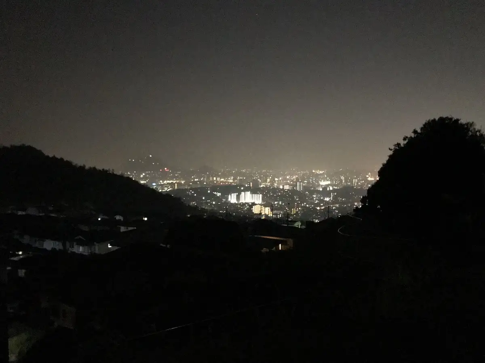
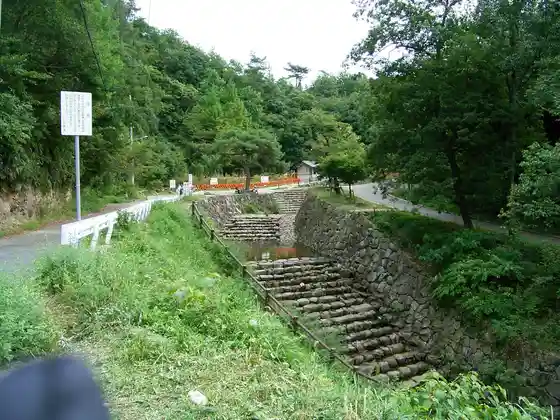

Japan / Hiroshima / Fuchu Town
Fuchu Town · Hiroshima
Fuchu Town
Highlighted on the Hiroshima map.

Fuchu Town Town Hall · Tourism site

Sights · Things to do · Places to eat · Places to stay · Day-to-day services
Nearby in Hiroshima: ← Fuchu · Fukuyama →
Other towns: Akiota · Akitakata · Etajima · Fuchu · Fukuyama · Hatsukaichi · Higashihiroshima · Hiroshima · Jinseikogen · Kaita · Kitahiroshima · Kumano · Kure · Mihara · Miyoshi · Onomichi · Osakikamijima · Otake · Saka · Sera · Shobara · Takehara
All towns in Hiroshima · Back to all prefectures